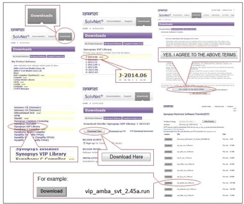

The Electronic Software Transfer (EST) system only displays products your site is entitled to download. If the product you are looking for is not available, contact est-ext@synopsys.com.
Follow the instructions for downloading the software from Synopsys. You can download from the Download Center using either HTTPS or FTP, or with a command-line FTP session. If your Synopsys SolvNetPlus password is unknown or forgotten, go to http://SolvNetPlus.synopsys.com.
Passive mode FTP is required. The passive command toggles between passive and active mode. If your FTP utility does not support passive mode, use http. For additional information, see the following web page:
2. Enter your Synopsys SolvNetPlus Username and Password.
3. Click Sign In button.
4. Make the following selections on SolvNetPlus to download the .run file of the VIP (See Figure 2‑1).
a. Downloads tab
b. VC VIP Library product releases
c. <release_version>
d. Download Here button
e. Yes, I Agree to the Above Terms button
f. Download .run file for the VIP
Figure 2‑1 SolvNetPlus Selections for VIP Download
g. Set the DESIGNWARE_HOME environment variable to a path where you want to install the VIP. % setenv DESIGNWARE_HOME VIP_installation_path
h. Execute the .run file by invoking its filename. The VIP is unpacked and all files and directories are installed under the path specified by the DESIGNWARE_HOME environment variable. The .run file can be executed from any directory. The important step is to set the DESIGNWARE_HOME environment variable before executing the .run file.
The Synopsys AMBA VIP suite includes VIP models for all AMBA interfaces (AHB, APB, AXI, and ATB). You must download the VC VIP for AMBA suite to access the VIP models for AHB, APB, AXI, and ATB.
Downloading Using FTP with a Web Browser
1. Follow the above instructions through the product version selection step.
2. Click the Download via FTP link instead of the Download Here button.
3. Click the Click Here To Download button.
4. Select the file(s) that you want to download.
5. Follow browser prompts to select a destination location.
If you are unable to download the Verification IP using above instructions, see the “Customer Support” section to obtain support for download and installation.